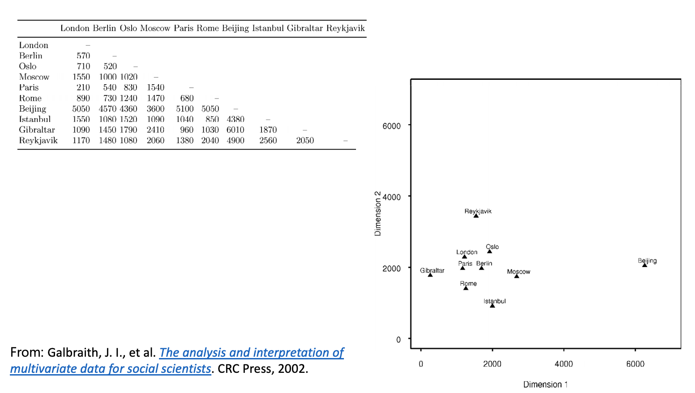
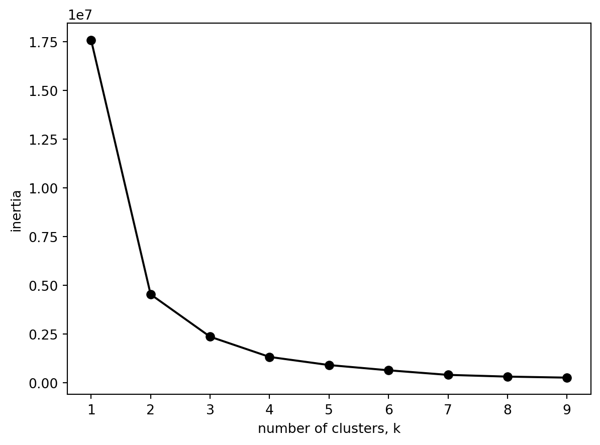
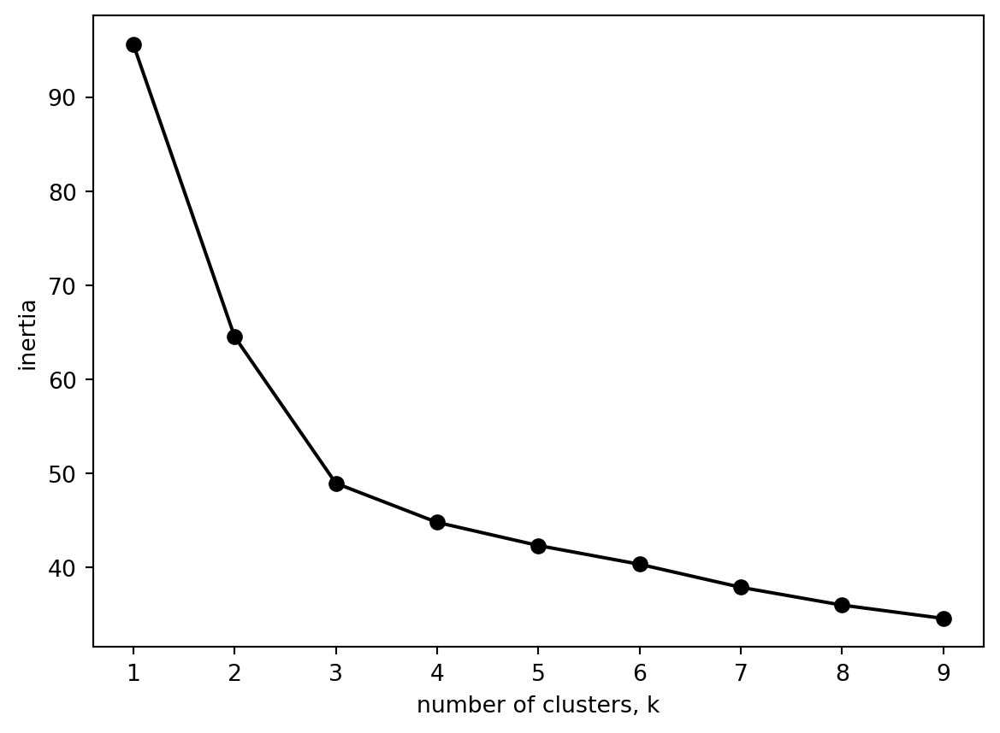
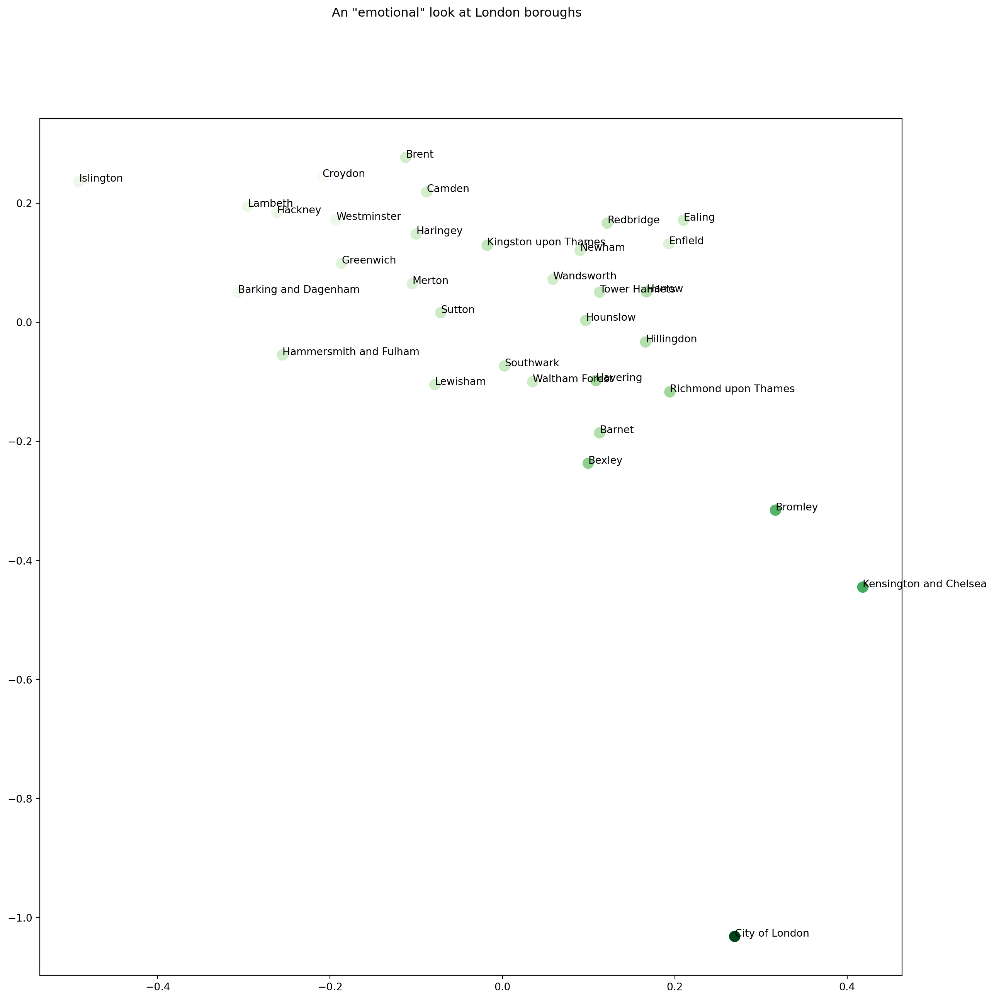
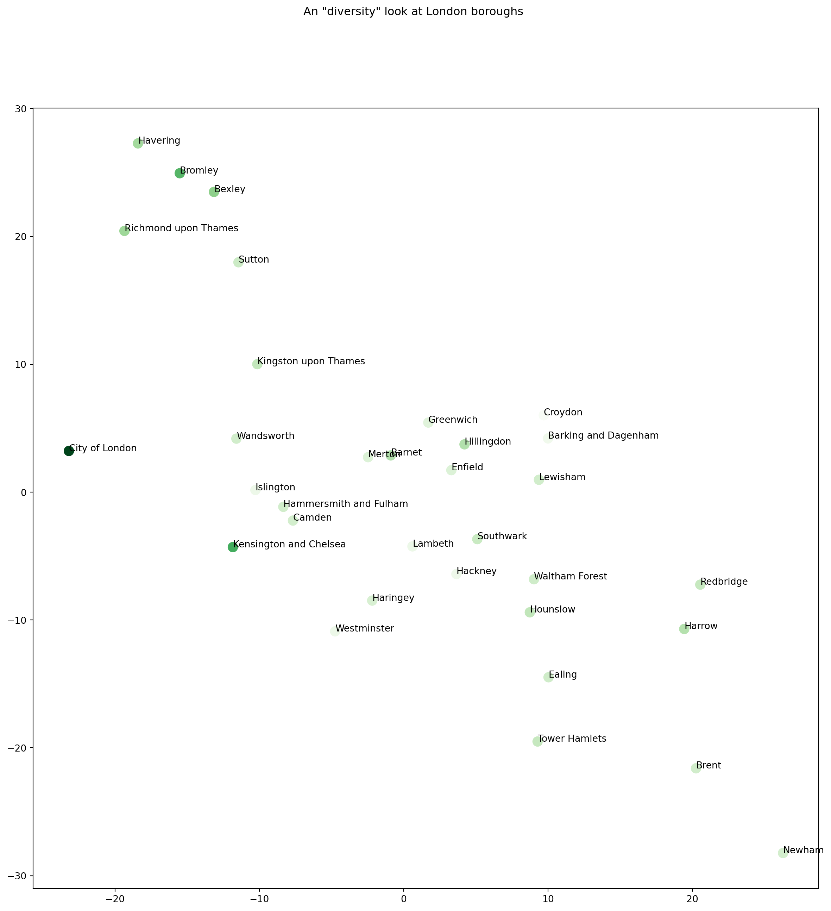

In this notebook, we will look at the London Borough data that we already encountered when we worked with the London Borough profiles and the Borough Cards that we utilised in the session.
You can have a look at the data through this online tool provided by GLA: https://data.london.gov.uk/london-area-profiles/
However, unlike the data that we explored during the session, this data set has several features (i.e., columns or variables), 76 of them to be precise.
What we would like to do in this notebook is to make use of a dimension reduction algorithm – Multidimensial Scaling – to help us create various different “spaces”. Each of these space will be a different way of “seeing this data” and if we adopt the language from Scott Page, they will have different “attentions”.
What the following exercise will do is to walk you through the variables of this data set through a few visualisations. It will then create a few different projections and will give them some names. What we expect you to do is to create your own projections and try to interpret them.
If you want to be reminded of what MDS is, you can have a look at the slides from last week. In a super tiny nutshell, MDS tries to create a space where “real” distances in the data are preserved as much as possible while “projecting” the data elements on a lower dimensional space. For instance, the following is from the slide deck:

What we see here are a few cities that would normally “exist” in our 3-dimensional world and the distances between them would normally be on this spherical coordinate system. But we create here is a 2D map and the distances between cities are preserved as much as possible. Near cities in the world are closer, and the further ones are further but not as accurate as it is in the world. The dimensions here carry no real meaning it is the distances that will “tell a story” (if there is one).
OK, let’s get on with the data now.
import warningswarnings.filterwarnings('ignore')import pandas as pddf = pd.read_excel('data/london-borough-profilesV3.xlsx', engine ='openpyxl')df.columns
Index(['Code', 'Area/INDICATOR', 'Inner/ Outer London',
'GLA Population Estimate 2013', 'GLA Household Estimate 2013',
'Inland Area (Hectares)', 'Population density (per hectare) 2013',
'Average Age, 2013', 'Proportion of population aged 0-15, 2013',
'Proportion of population of working-age, 2013',
'Proportion of population aged 65 and over, 2013',
'% of resident population born abroad (2013)',
'Largest migrant population by country of birth (2013)',
'% of largest migrant population (2013)',
'Second largest migrant population by country of birth (2013)',
'% of second largest migrant population (2013)',
'Third largest migrant population by country of birth (2013)',
'% of third largest migrant population (2013)',
'% of population from BAME groups (2013)',
'% people aged 3+ whose main language is not English (2011 census)',
'Overseas nationals entering the UK (NINo), (2013/14)',
'New migrant (NINo) rates, (2013/14)', 'Employment rate (%) (2013/14)',
'Male employment rate (2013/14)', 'Female employment rate (2013/14)',
'Unemployment rate (2013/14)', 'Youth Unemployment rate (2013/14)',
'Proportion of 16-18 year olds who are NEET (%) (2013)',
'Proportion of the working-age population who claim benefits (%) (Feb-2014)',
'% working-age with a disability (2012)',
'Proportion of working age people with no qualifications (%) 2013',
'Proportion of working age people in London with degree or equivalent and above (%) 2013',
'Gross Annual Pay, (2013)', 'Gross Annual Pay - Male (2013)',
'Gross Annual Pay - Female (2013)',
'% adults that volunteered in past 12 months (2010/11 to 2012/13)',
'Number of jobs by workplace (2012)',
'% of employment that is in public sector (2012)', 'Jobs Density, 2012',
'Number of active businesses, 2012',
'Two-year business survival rates 2012',
'Crime rates per thousand population 2013/14',
'Fires per thousand population (2013)',
'Ambulance incidents per hundred population (2013)',
'Median House Price, 2013',
'Average Band D Council Tax charge (£), 2014/15',
'New Homes (net) 2012/13', 'Homes Owned outright, (2013) %',
'Being bought with mortgage or loan, (2013) %',
'Rented from Local Authority or Housing Association, (2013) %',
'Rented from Private landlord, (2013) %',
'% of area that is Greenspace, 2005', 'Total carbon emissions (2012)',
'Household Waste Recycling Rate, 2012/13',
'Number of cars, (2011 Census)',
'Number of cars per household, (2011 Census)',
'% of adults who cycle at least once per month, 2011/12',
'Average Public Transport Accessibility score, 2012',
'Indices of Multiple Deprivation 2010 Rank of Average Score',
'Income Support claimant rate (Feb-14)',
'% children living in out-of-work families (2013)',
'Achievement of 5 or more A*- C grades at GCSE or equivalent including English and Maths, 2012/13',
'Rates of Children Looked After (2013)',
'% of pupils whose first language is not English (2014)',
'Male life expectancy, (2010-12)', 'Female life expectancy, (2010-12)',
'Teenage conception rate (2012)',
'Life satisfaction score 2012-13 (out of 10)',
'Worthwhileness score 2012-13 (out of 10)',
'Happiness score 2012-13 (out of 10)',
'Anxiety score 2012-13 (out of 10)', 'Political control in council',
'Proportion of seats won by Conservatives in 2014 election',
'Proportion of seats won by Labour in 2014 election',
'Proportion of seats won by Lib Dems in 2014 election',
'Turnout at 2014 local elections'],
dtype='object')
df.head()
Code
Area/INDICATOR
Inner/ Outer London
GLA Population Estimate 2013
GLA Household Estimate 2013
Inland Area (Hectares)
Population density (per hectare) 2013
Average Age, 2013
Proportion of population aged 0-15, 2013
Proportion of population of working-age, 2013
...
Teenage conception rate (2012)
Life satisfaction score 2012-13 (out of 10)
Worthwhileness score 2012-13 (out of 10)
Happiness score 2012-13 (out of 10)
Anxiety score 2012-13 (out of 10)
Political control in council
Proportion of seats won by Conservatives in 2014 election
Proportion of seats won by Labour in 2014 election
Proportion of seats won by Lib Dems in 2014 election
Turnout at 2014 local elections
0
E09000001
City of London
Inner London
8000
4514.371383
290.4
27.525868
41.303887
7.948036
77.541617
...
.
8.10
8.23
7.44
x
NaN
NaN
NaN
NaN
NaN
1
E09000002
Barking and Dagenham
Outer London
195600
73261.408580
3610.8
54.160527
33.228935
26.072939
63.835021
...
35.4
7.06
7.57
6.97
3.3
Lab
0.000000
100.000000
0.000000
38.16
2
E09000003
Barnet
Outer London
370000
141385.794900
8674.8
42.651374
36.896246
20.886408
65.505593
...
14.7
7.35
7.79
7.27
2.63
Cons
50.793651
42.857143
1.587302
41.1
3
E09000004
Bexley
Outer London
236500
94701.226400
6058.1
39.044243
38.883039
20.282830
63.146450
...
25.8
7.47
7.75
7.21
3.22
Cons
71.428571
23.809524
0.000000
not avail
4
E09000005
Brent
Outer London
320200
114318.553900
4323.3
74.063670
35.262694
20.462585
68.714872
...
19.6
7.23
7.32
7.09
3.33
Lab
9.523810
88.888889
1.587302
33
5 rows × 76 columns
Lots of different features. We also have really odd NaN values such as x and not available. We can try and get rid of this.
def isnumber(x):try:float(x)returnTrueexcept:if (len(x) >1) & ("not avail"notin x):returnTrueelse:returnFalse# apply isnumber function to every elementdf = df[df.applymap(isnumber)]df.head()
Code
Area/INDICATOR
Inner/ Outer London
GLA Population Estimate 2013
GLA Household Estimate 2013
Inland Area (Hectares)
Population density (per hectare) 2013
Average Age, 2013
Proportion of population aged 0-15, 2013
Proportion of population of working-age, 2013
...
Teenage conception rate (2012)
Life satisfaction score 2012-13 (out of 10)
Worthwhileness score 2012-13 (out of 10)
Happiness score 2012-13 (out of 10)
Anxiety score 2012-13 (out of 10)
Political control in council
Proportion of seats won by Conservatives in 2014 election
Proportion of seats won by Labour in 2014 election
Proportion of seats won by Lib Dems in 2014 election
Turnout at 2014 local elections
0
E09000001
City of London
Inner London
8000
4514.371383
290.4
27.525868
41.303887
7.948036
77.541617
...
NaN
8.10
8.23
7.44
NaN
NaN
NaN
NaN
NaN
NaN
1
E09000002
Barking and Dagenham
Outer London
195600
73261.408580
3610.8
54.160527
33.228935
26.072939
63.835021
...
35.4
7.06
7.57
6.97
3.3
Lab
0.000000
100.000000
0.000000
38.16
2
E09000003
Barnet
Outer London
370000
141385.794900
8674.8
42.651374
36.896246
20.886408
65.505593
...
14.7
7.35
7.79
7.27
2.63
Cons
50.793651
42.857143
1.587302
41.1
3
E09000004
Bexley
Outer London
236500
94701.226400
6058.1
39.044243
38.883039
20.282830
63.146450
...
25.8
7.47
7.75
7.21
3.22
Cons
71.428571
23.809524
0.000000
NaN
4
E09000005
Brent
Outer London
320200
114318.553900
4323.3
74.063670
35.262694
20.462585
68.714872
...
19.6
7.23
7.32
7.09
3.33
Lab
9.523810
88.888889
1.587302
33
5 rows × 76 columns
That looks much cleaner.
Replace the NaN values in numeric columns with the mean.
# get only numeric columnsnumericColumns = df._get_numeric_data()
from sklearn.metrics import euclidean_distances# keep place names and store them in a variableplaceNames = df["Area/INDICATOR"]# let's fill the missing values with mean()numericColumns = numericColumns.fillna(numericColumns.mean())# let's centralize the datanumericColumns -= numericColumns.mean()# now we compute the euclidean distances between the columns by passing the same data twice# the resulting data matrix now has the pairwise distances between the boroughs.# CAUTION: note that we are now building a distance matrix in a high-dimensional data space# remember the Curse of Dimensionality -- we need to be cautious with the distance valuesdistMatrix = euclidean_distances(numericColumns, numericColumns)
Check to make sure everything looks ok.
numericColumns.head()
GLA Population Estimate 2013
GLA Household Estimate 2013
Inland Area (Hectares)
Population density (per hectare) 2013
Average Age, 2013
Proportion of population aged 0-15, 2013
Proportion of population of working-age, 2013
Proportion of population aged 65 and over, 2013
% of population from BAME groups (2013)
% people aged 3+ whose main language is not English (2011 census)
...
Average Public Transport Accessibility score, 2012
Indices of Multiple Deprivation 2010 Rank of Average Score
Income Support claimant rate (Feb-14)
Rates of Children Looked After (2013)
Life satisfaction score 2012-13 (out of 10)
Worthwhileness score 2012-13 (out of 10)
Happiness score 2012-13 (out of 10)
Proportion of seats won by Conservatives in 2014 election
Proportion of seats won by Labour in 2014 election
Proportion of seats won by Lib Dems in 2014 election
0
-247760.606061
-97761.616805
-4473.681818
-43.279630
5.426932
-11.500067
8.480871
3.019196
-17.390874
-4.491385
...
3.753658
157.424242
-1.726749
42.212121
0.816364
0.651212
0.23303
0.000000
0.000000
-8.881784e-16
1
-60160.606061
-29014.579608
-1153.281818
-16.644971
-2.648021
6.624837
-5.225725
-1.399112
5.764246
-2.905288
...
-0.882730
-82.575758
1.787041
20.212121
-0.223636
-0.008788
-0.23697
-32.854444
43.384181
-6.598065e+00
2
114239.393939
39109.806712
3910.718182
-28.154125
1.019290
1.438305
-3.555153
2.116847
-2.799300
1.775548
...
-0.883020
71.424242
-0.517827
-18.787879
0.066364
0.211212
0.06303
17.939207
-13.758676
-5.010764e+00
3
-19260.606061
-7574.761788
1294.018182
-31.761255
3.006083
0.834727
-5.914296
5.079569
-20.328016
-15.598200
...
-1.364540
69.424242
-0.018377
-8.787879
0.186364
0.171212
0.00303
38.574127
-32.806295
-6.598065e+00
4
64439.393939
12042.565712
-440.781818
3.258171
-0.614262
1.014482
-0.345874
-0.668608
25.000030
15.521631
...
-0.174795
-69.575758
0.001370
-6.787879
-0.053636
-0.258788
-0.11697
-23.330634
32.273070
-5.010764e+00
5 rows × 41 columns
We can plot out our many dimension space by uncommenting the code below (also note down how long does this take).
#import seaborn as sns#sns_plot = sns.pairplot(numericColumns)#sns_plot.savefig("figs/output.png")
Given that this takes quite a while (around 10 minutes), this is the image that would result from uncommenting and running the code above.
Dimension reduction will help us here!
We could apply various different types of dimension reduction here. We are specifically going to capture the dissimilarity in the data using multidimensional scaling. Our distance matrix will come in useful here.
from sklearn import manifold# for instance, typing distMatrix.shape on the console gives:# Out[115]: (38, 38) # i.e., the number of rows# first we generate an MDS object and extract the projectionsmds = manifold.MDS(n_components =2, max_iter=3000, n_init=1, dissimilarity="precomputed", normalized_stress=False)Y = mds.fit_transform(distMatrix)
To interpret what is happening, let us plot the boroughs on the projected two dimensional space.
from matplotlib import pyplot as pltfig, ax = plt.subplots()fig.set_size_inches(15, 15)plt.suptitle('MDS on only London boroughs')ax.scatter(Y[:, 0], Y[:, 1], c="#D06B36", s =100, alpha =0.8, linewidth=0)for i, txt inenumerate(placeNames): ax.annotate(txt, (Y[:, 0][i],Y[:, 1][i]))

Our data also include happiness metrics. Pulling these out of our data and carrying out more multidimensional scaling can help us see how the boroughs differ in happiness.
# get the data columns relating to emotions and feelingsdataOnEmotions = numericColumns[["Life satisfaction score 2012-13 (out of 10)", "Worthwhileness score 2012-13 (out of 10)","Happiness score 2012-13 (out of 10)"]]# a new distance matrix to represent "emotional distance"sdistMatrix2 = euclidean_distances(dataOnEmotions, dataOnEmotions)# compute a new "embedding" (machine learners' word for projection)Y2 = mds.fit_transform(distMatrix2)# let's look at the resultsfig, ax = plt.subplots()fig.set_size_inches(15, 15)plt.suptitle('An \"emotional\" look at London boroughs')ax.scatter(Y2[:, 0], Y2[:, 1], c="#D06B36", s =100, alpha =0.8, linewidth=0)for i, txt inenumerate(placeNames): ax.annotate(txt, (Y2[:, 0][i],Y2[:, 1][i]))

The location of the different boroughs on the 2 dimensional multidimensional scaling space from the happiness metrics is
We may want to look at if the general happiness rating captures the position of the boroughs. To do this we need to assign colours based on the binned happiness score.
import numpy as npcolorMappingValuesHappiness = np.asarray(dataOnEmotions[["Life satisfaction score 2012-13 (out of 10)"]]).flatten()print(results_fixed.shape)colorMappingValuesHappiness.shapecolorMappingValuesHappiness#c = colorMappingValuesCrime, cmap = plt.cm.Greens
# let's look at the resultsfig, ax = plt.subplots()fig.set_size_inches(15, 15)plt.suptitle('An \"emotional\" look at London boroughs')#ax.scatter(results_fixed[:, 0], results_fixed[:, 1], c = colorMappingValuesHappiness, cmap='viridis')plt.scatter(results_fixed[:, 0], results_fixed[:, 1], c = colorMappingValuesHappiness, s =100, cmap=plt.cm.Greens)for i, txt inenumerate(placeNames): ax.annotate(txt, (results_fixed[:, 0][i],results_fixed[:, 1][i]))

# get the data columns relating to emotions and feelingsdataOnDiversity = numericColumns[["Proportion of population aged 0-15, 2013", "Proportion of population of working-age, 2013", "Proportion of population aged 65 and over, 2013", "% of population from BAME groups (2013)", "% people aged 3+ whose main language is not English (2011 census)"]]# a new distance matrix to represent "emotional distance"sdistMatrix3 = euclidean_distances(dataOnDiversity, dataOnDiversity)mds = manifold.MDS(n_components =2, max_iter=3000, n_init=1, dissimilarity="precomputed", normalized_stress =False)Y = mds.fit_transform(distMatrix3)# Visualising the data.fig, ax = plt.subplots()fig.set_size_inches(15, 15)plt.suptitle('An \"diversity\" look at London boroughs')ax.scatter(Y[:, 0], Y[:, 1], s =100, c = colorMappingValuesHappiness, cmap=plt.cm.Greens)for i, txt inenumerate(placeNames): ax.annotate(txt, (Y[:, 0][i],Y[:, 1][i]))

::: callout-note
22 It is now your turn!
22.1 First task:
This looks very different to the one above on “emotion” related variables. Our job now is to relate these two projections to one another. Do you see similarities? Do you see clusters of boroughs? Can you reflect on how you can relate and combine these two maps conceptually?
22.2 Second task:
Can you think of and then generate other maps that you can produce with this data? Have a look at the variables once again and try to produce new “perspectives” to the data and see what they have to say.
Also think of visualisations to help you here, can you colour them with a different variable? What would that change?